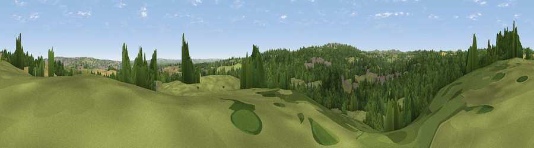

Viewpoint near Beamish
#31807 in England · top 71% of its area beats it · near BeamishThe view, rendered

A 360° render of this exact spot computed from the terrain model, tree cover and land cover — summer colours, afternoon light, calibrated against photographs of famous viewpoints. Real trees, hedges and buildings will differ in detail.
The panorama
Grey silhouette: terrain skyline in each direction (720 bearings, Earth curvature and refraction included). Dashed green: skyline with trees (+15 m) and buildings (+8 m) as obstacles. Blue strip: how far the ground is visible on each bearing.
Where the view opens
Wedge length = distance to the farthest visible ground on that bearing (vegetation-aware). Rings at 10, 25 and 50 km.
What fills the view
41% woodland · 41% grassland · 11% cropland · 7% built-up
Angular shares of the visible panorama (visual magnitude), not map area. Landscape diversity 0.50 (0–1 Shannon).
Key numbers
More beautiful places nearby
The staircase of upgrades: each row has a higher view potential than everything closer. Driving times are estimates from straight-line distance, calibrated against real road routing — check an actual route before setting out.
| Place | Direction | Drive | Score |
|---|---|---|---|
| Whinnel Hill | N · 1 km | ~4 min | 52.4 |
| Viewpoint near Sunniside | N · 3 km | ~7 min | 77.6 |
| Pontop Pike | WSW · 8 km | ~16 min | 77.8 |
| Viewpoint near Rothbury | NNW · 47 km | ~68 min | 81.1 |
| Dove Crag | NNW · 47 km | ~68 min | 82.3 |
| Viewpoint near Lazenby | SE · 50 km | ~71 min | 86.4 |
| Warsett Hill | SE · 57 km | ~79 min | 86.8 |
| Viewpoint near Easington | SE · 62 km | ~85 min | 90.2 |
54.88946, -1.64726 · source: screening · position refined by local search. Computed location — check access rights before visiting.